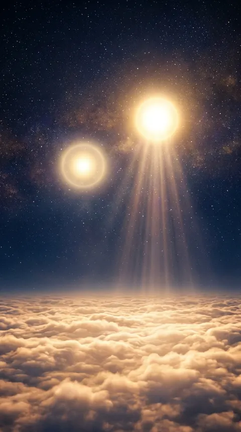
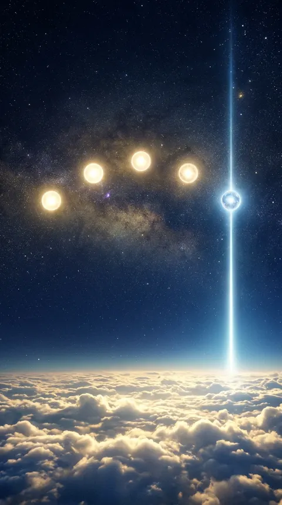
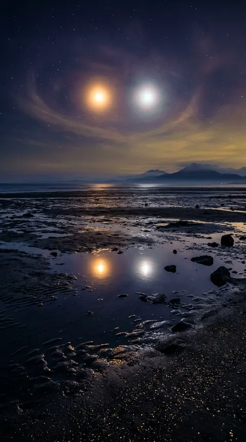
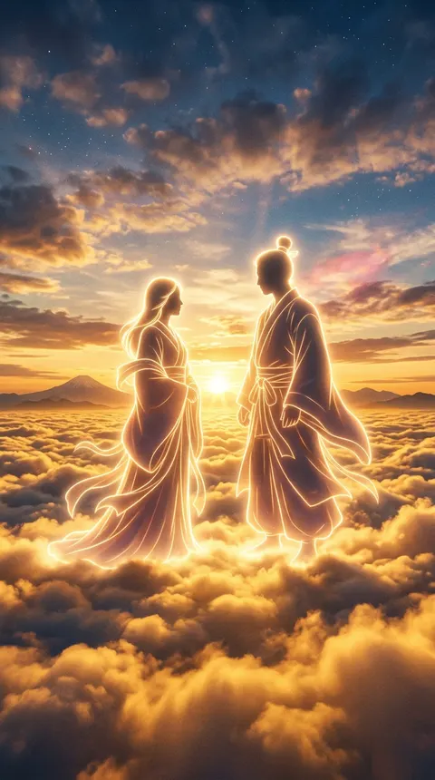
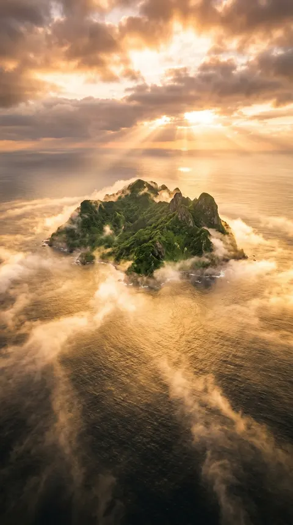
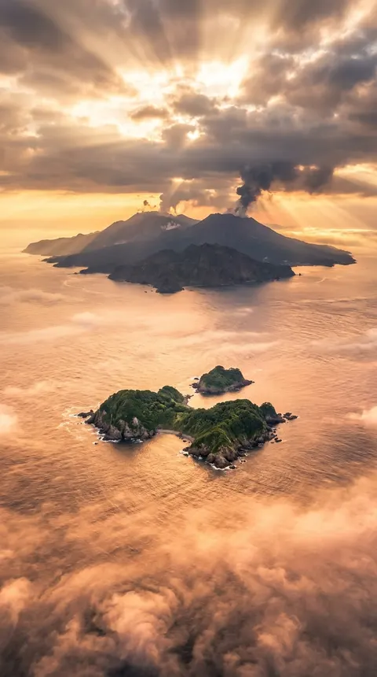
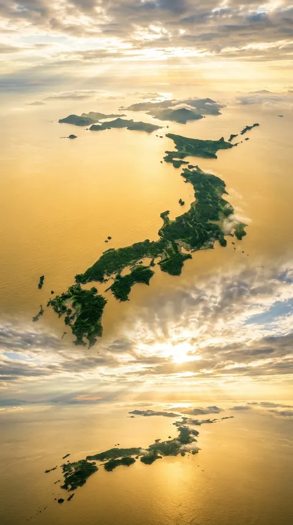
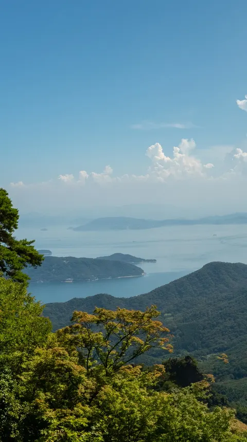

神さま図鑑いまさら聞けない日本神話
古事記に登場する神さまを、登場する順に1柱ずつ（男女の神は1組ずつ）。1分の動画と、名前の意味・祀る神社・よくある疑問をまとめました。
天地のはじめ
別天神（ことあまつかみ）の五柱

其の一天之御中主神古事記にいちばん最初に登場する神さま

其の二高御産巣日神天孫降臨を命じた「生み出す力」の神

其の三神産巣日神殺された大国主神を生き返らせた神

其の四宇摩志阿斯訶備比古遅神葦の芽から生まれた神

其の五天之常立神特別な五柱の神の最後の一柱
神世七代
国之常立神から伊耶那岐・伊耶那美まで

其の六国之常立神日本書紀では最初に現れる神

其の七豊雲野神8つ以上の名前をもつ神

其の八宇比地邇神・須比智邇神初めての男神と女神

其の九角杙神・活杙神名前の「杭」に3つの説

其の十意富斗能地神・大斗乃弁神名前の中心は「と」の一文字

其の十一於母陀流神・阿夜訶志古泥神「第六天神社」の神さま

其の十二伊耶那岐神・伊耶那美神矛でかき回して島ができた
国生み
日本の島々の誕生

其の十三水蛭子流された最初の子は、えびす様に

其の十四淡道之穂之狭別島最初に生まれた島は淡路島

其の十五伊予之二名島四国には顔が四つある

其の十六隠伎之三子島・筑紫島九州の4つの名にはすべて「日」

其の十七大八島国日本が「八つの島」と呼ばれたわけ

其の十八吉備児島と六つの島国生みの帰り道に生まれた島
神生み
家・海・水・山・火の神々